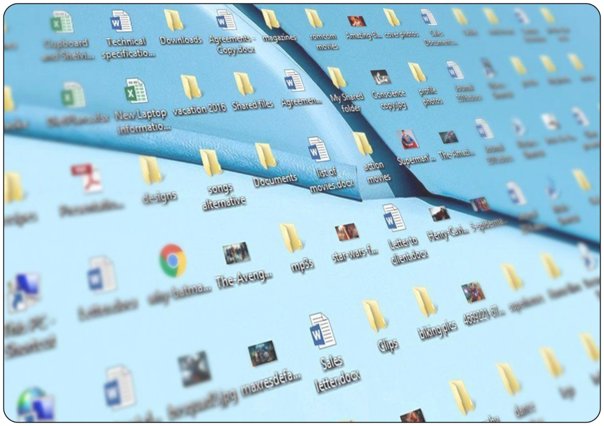
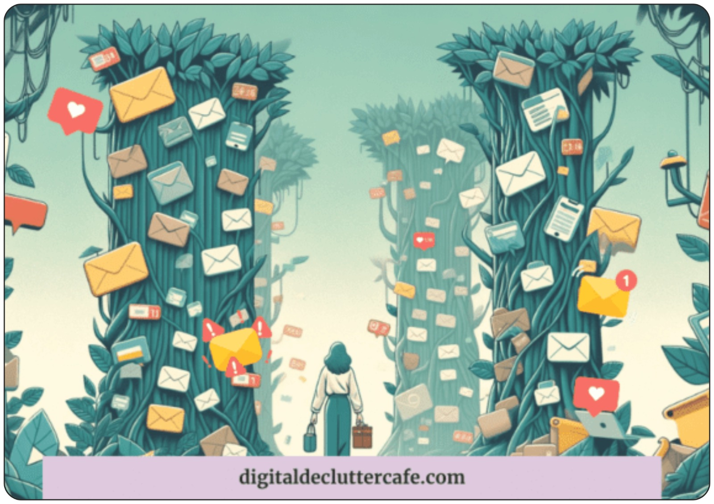

Your Digital Stuff is a Mess? Let's Fix It!

We live in a world where information is oil. With the Fear Of Missing Out (FOMO), we have become digital hoarders. What do you hoard in this digital world?
A nice article about something you like — you save it! A nice dog picture from the internet — you save it and share it with your friends! A lovely website — you bookmark it!
Hoarding is not a problem, but not organising it is.
Because of not organising properly, what you end up with is: folders everywhere, inability to find that important file you saved somewhere, and emails accumulating. Well — everyone is sailing in the same boat here. But here's the thing: organising your digital stuff is not just about being tidy. It can actually make your work WAY less stressful and much easier.
De-cluttering Your System and Online Presence
So, you ask me — "Do I have to spend my valuable time to de-clutter my digital pile?" Yes, boss. You have to.
Consider your backpack. If it's full of wrinkled old papers, stale snacks, and books all packed in together, getting an important document that your boss shared with you to review is a nightmare, right? Your digital life — your computer files, emails, apps — is the same backpack, but it's just online and virtual.
So, when it's disorganised:
- You Waste Time: You waste forever searching for things instead of actually doing things (like completing homework or goofing off!).
- You Get Stressed: Digital stress is real. Can't locate that important project? Missed a deadline since it was hidden in your email? That will stress you out.
- Things Get Lost: Vital assignments, sweet ideas you bookmarked, login information — zapped! Vanished in the mess.
- Work Gets Harder: You couldn't find a file. You end up redoing a document or spreadsheet for hours. Later, after a month, you will find the old file when you are rummaging your digital pile for something else.
- You Compromise Your Hard Work: You created your personal research file online — say in Google Docs. You gave access to all of your work colleagues. You paused the research for six months. Three months later, a friend has the same research idea and, searching their Drive, finds the document you shared by mistake.
Organising enables you to quickly find things, meet deadlines, feel more relaxed, and even have more leisure time. It's like taking your brain on a little holiday!
Tiago Forte's Simple Idea: Organise for Action!

Tiago Forte, a professional organiser, has a great idea known as the PARA method. It isn't about having things look aesthetically pleasing. It's about making things easy so you can get things done.
"Organise for action, not for reference." — Tiago Forte
This means: organise your folders and files in terms of what you're doing, not where things go. Consider what projects you're currently working on.
"The goal is not to organise your information; it's to organise your attention." — Tiago Forte
Organising your digital clutter keeps your eyes on what's important in the moment, without all the noise interfering.
Where to Start Organising?
Don't worry — you don't have to do it all at once! Begin small. Choose one item below to do today:
Tame Your Files & Folders (Think ACTION!)
- Look at what you're DOING: What projects are you currently working on? (e.g., "Science Fair Project," "English Essay," "Soccer Team Schedule"). Create a folder for each ongoing project.
- Put stuff you need SOON in those folders: Anything you need for that task soon goes into its folder.
- STUFF FOR LATER? Create an "Area" folder: Things you have to keep but aren't currently using (like "Math Notes" or "College Stuff") go into a separate folder. Tiago calls these "Areas" — things you have to keep track of over time.
- Name Files Accurately: Don't save things under "Document1"! Name them so you can tell what they are immediately, such as "Essay_FirstDraft_May5" or "Science Lab Results."
- Delete the Trash! Be courageous. Remove old downloads, out-of-focus photos, or documents you absolutely don't need anymore.
Clear Your Mailbox (Like Clearing Your Work Desk)
- Unsubscribe from Annoying Emails: Look at emails from stores or websites you don't care about. Scroll down and click "Unsubscribe." Do a whole bunch all at once!
- Use Folders or Labels: Create folders such as "Finance," "Important," or "To Do Later." Get emails out of your main inbox so it's less intimidating.
- Get Rid of Emails Quickly: Read an email? Act on it immediately: reply, delete it, or send it to a folder. Don't just let it sit there.
Use a Calendar (Your Phone's is Okay!)
- Schedule EVERYTHING in it: Homework deadlines, project due dates, club meetings, soccer practice, friendship hangouts. All of them!
- Set Reminders: Get your phone to buzz or ping before something's due. Life-saver!
- Check it EVERY DAY: Make it a habit to look at your calendar morning or nighttime.
Keep It Safe (This is Important!)
- Strong Passwords: Avoid using "password123" or your pet's name! Make them complex (mix letters, numbers, symbols). Better still, consult a parent about using a password manager (such as Bitwarden — it's free!). It stores all your passwords securely so you only need to remember one.
- Turn on Extra Security (2FA): On key things such as email, enable Two-Factor Authentication (2FA). Even if someone gets your password, they'll need a unique code sent to your phone. Way more secure!
- Back Up Your Stuff! Use Google Drive, iCloud, or an external hard disk. If your computer crashes, your precious files are backed up somewhere else.
Organising your digital life may sound dull, but I promise — it's life-changing. You'll spend less time, misplace less, meet deadlines, and feel HUGELY less stressed.
Your Easy Challenge (Choose ONE!)
- Invest 15 minutes TODAY: Organise your computer's "Downloads" folder or your phone's photos. Get rid of what you don't need!
- Create ONE Project Folder: Think of one project you have going on currently (large homework, club project?). Create a folder for it and place all related files within.
- Insert ONE Significant Date into Your Calendar: Have an upcoming test or project? Insert it into your phone's calendar immediately and schedule a reminder for one or two days prior.
Small steps create BIG change. You've got this! Begin today, and your happier, less-stressed future self will be SO glad you did.
Reference:
Forte, Tiago. Building a Second Brain: A Proven Method to Organize Your Digital Life and Unlock Your Creative Potential. Atria Books, 2022.